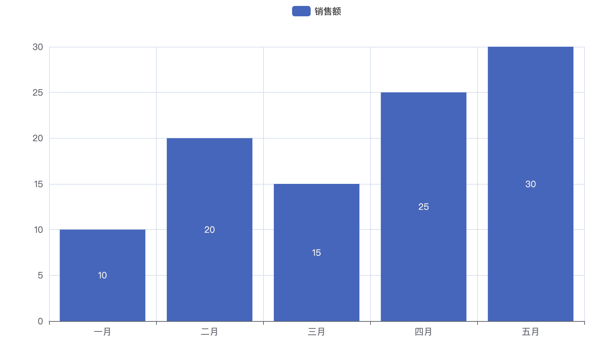
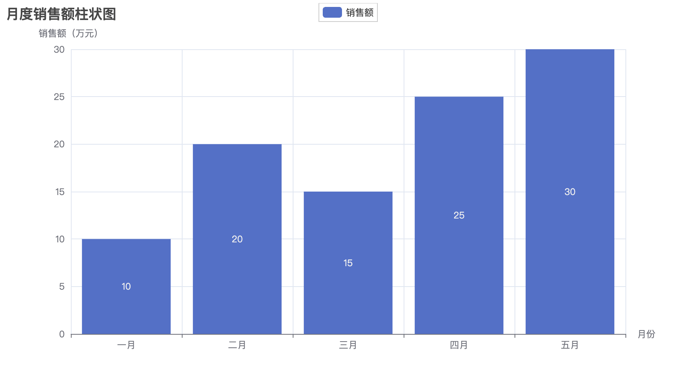

Python pyecharts モジュール
pyecharts は ECharts をベースとした Python データ可視化ライブラリで、ユーザーが Python 言語を使用してさまざまな種類のインタラクティブなグラフやデータ可視化を生成できるようにします。
ECharts は JavaScript で実装されたオープンソースの可視化ライブラリであり、Pyecharts は ECharts の Python ラッパーで、Python で ECharts を使いやすくします。
pyecharts はシンプルで柔軟な API を提供し、ユーザーは折れ線グラフ、棒グラフ、散布図、円グラフ、地図などを含む（ただしこれらに限定されない）さまざまなグラフを簡単に作成できます。
pyecharts を使用すると、ユーザーは Python 言語でデータを処理・準備し、簡潔なコードでインタラクティブなグラフを生成できます。これらのグラフは Web アプリケーションに埋め込んだり、静的ファイルとして保存したりできます。
pyecharts の特徴と機能：
シンプルで使いやすい：Pyecharts は直感的で使いやすい API を提供するため、ユーザーはすぐに使い始め、さまざまなグラフを簡単に生成できます。
豊富なグラフタイプ：折れ線グラフ、棒グラフ、散布図、円グラフ、地図など、さまざまな一般的なグラフタイプをサポートし、さまざまなシーンのニーズに応えます。
主流のデータ形式をサポート：リスト、辞書、Pandas DataFrame などの一般的なデータ形式を処理できます。
インタラクティブ性：生成されたグラフはインタラクティブにでき、ユーザーはマウスホバーやズームなどでグラフと操作できます。
豊富な設定オプション：グラフのスタイルやレイアウトなどの属性をカスタマイズできる豊富な設定オプションを提供します。
テーマのサポート：複数のテーマを提供しており、ユーザーは必要に応じて適切なテーマを選択でき、グラフをアプリケーションの全体的なスタイルに合わせることができます。
pyecharts のインストール
pip でのインストール：
pip install pyecharts
ソースからのインストール：
$ git clone https://github.com/pyecharts/pyecharts.git $ cd pyecharts $ pip install -r requirements.txt $ python setup.py install # 或者执行 python install.py
インストールが成功したら、pyecharts のバージョンを確認できます：
import pyecharts print(pyecharts.__version__)
出力は次のようになります：
2.0.4
pyecharts のグラフタイプ
pyecharts は以下のグラフタイプをサポートしています：
| グラフタイプ | pyecharts クラス | パッケージのインポート |
|---|---|---|
| 折れ線グラフ | Line | from pyecharts.charts import Line |
| 棒グラフ | Bar | from pyecharts.charts import Bar |
| 散布図 | Scatter | from pyecharts.charts import Scatter |
| 円グラフ | Pie | from pyecharts.charts import Pie |
| レーダーチャート | Radar | from pyecharts.charts import Radar |
| ヒートマップ | HeatMap | from pyecharts.charts import HeatMap |
| K ライン図 | Kline | from pyecharts.charts import Kline |
| 箱ひげ図 | Boxplot | from pyecharts.charts import Boxplot |
| 地図 | Map | from pyecharts.charts import Map |
| ワードクラウド図 | WordCloud | from pyecharts.charts import WordCloud |
| ゲージチャート | Gauge | from pyecharts.charts import Gauge |
| ファネルチャート | Funnel | from pyecharts.charts import Funnel |
| 樹形図 | Tree | from pyecharts.charts import Tree |
| 平行座標系グラフ | Parallel | from pyecharts.charts import Parallel |
| サンキーダイアグラム | Sankey | from pyecharts.charts import Sankey |
| 地理座標系グラフ | Geo | from pyecharts.charts import Geo |
| タイムライングラフ | Timeline | from pyecharts.charts import Timeline |
| 3D 散布図 | Scatter3D | from pyecharts.charts import Scatter3D |
| 3D 棒グラフ | Bar3D | from pyecharts.charts import Bar3D |
| 3D 曲面グラフ | Surface3D | from pyecharts.charts import Surface3D |
最初のグラフを作成する
次に、Pyecharts を使用して、5か月分の売上高を示す簡単な棒グラフを作成します：
例
# データを準備
x_data = ['1月', '2月', '3月', '4月', '5月']
y_data = [10, 20, 15, 25, 30]
# 棒グラフを作成
bar_chart = Bar()
bar_chart.add_xaxis(x_data)
bar_chart.add_yaxis(売上高, y_data)
# パスパラメータを渡すこともできます。例: bar_chart.render("bar_chart.html")
bar_chart.render()
もしbar_chart.render()中でファイルパスを指定しない場合、Pyecharts はデフォルトで現在の作業ディレクトリに "render.html" という名前のファイルを生成します。つまり、生成されたグラフは "render.html" ファイルに保存されます。
上記のコードの実行結果は次のとおりです：

グラフのファイル名に一定の規則を持たせたい場合や、保存先のパスを指定したい場合は、render() メソッドにファイルパスのパラメータを渡すことができます。例：
bar_chart.render("my_bar_chart.html")
これにより、生成されたグラフは現在の作業ディレクトリの "my_bar_chart.html" ファイルに保存されます。
グラフ設定オプションの設定
この例のグラフのタイトルは「月度売上高棒グラフ」で、横軸は月、縦軸は売上高です。実際のニーズに応じてデータとグラフ設定を調整できます：
例
from pyecharts.charts import Bar
# データを準備
x_data = ['1月', '2月', '3月', '4月', '5月']
y_data = [10, 20, 15, 25, 30]
# 棒グラフを作成
bar_chart = Bar()
bar_chart.add_xaxis(x_data)
bar_chart.add_yaxis(売上高, y_data)
# グラフを設定
bar_chart.set_global_opts(
title_opts=opts.TitleOpts(title=月度売上高棒グラフ),
xaxis_opts=opts.AxisOpts(name=月),
yaxis_opts=opts.AxisOpts(name=売上高（万元）),
)
# グラフをレンダリング
bar_chart.render("bar_chart.html")
説明：
Bar()：棒グラフオブジェクトを作成します。add_xaxis和add_yaxis：それぞれ横軸と縦軸のデータを追加するために使用します。set_global_opts：タイトルや座標軸の名前などのグローバル設定を構成します。
生成されたグラフは "bar_chart.html" ファイルとして保存されます。ブラウザでこのファイルを開くと、生成された棒グラフを確認できます。

テーマの使用
pyecharts はテーマの切り替えをサポートしており、ユーザーは自分のニーズに応じて適切なテーマを選択し、グラフのスタイルを変更できます。
pyecharts は 10 以上の組み込みテーマを提供しており、開発者は自分の好みのテーマをカスタマイズすることもできます。
以下は、pyecharts でテーマを切り替える方法を示す簡単な例です：
例
from pyecharts.charts import Bar
# 組み込みテーマのタイプは pyecharts.globals.ThemeType で確認できます
from pyecharts.globals import ThemeType
# データを準備
x_data = ['1月', '2月', '3月', '4月', '5月']
y_data = [10, 20, 15, 25, 30]
# 棒グラフを作成
bar_chart = Bar(init_opts=opts.InitOpts(theme=ThemeType.LIGHT)) # 初期テーマは明るい色系
bar_chart.add_xaxis(x_data)
bar_chart.add_yaxis(売上高, y_data)
# グラフを設定
bar_chart.set_global_opts(
title_opts=opts.TitleOpts(title=月度売上高棒グラフ),
xaxis_opts=opts.AxisOpts(name=月),
yaxis_opts=opts.AxisOpts(name=売上高（万元）),
)
# ダークテーマに切り替え
bar_chart.set_global_opts(theme=ThemeType.DARK)
# グラフをレンダリング
bar_chart.render("themed_bar_chart.html")
上記の例では、pyecharts でThemeTypeを使用してテーマを切り替える方法を示しています。pyecharts がサポートするテーマタイプには次のものがあります：LIGHT（明るい色系）、DARK（ダーク系）などがあります。必要に応じて適切なテーマを選択できます。
init_opts=opts.InitOpts(theme=ThemeType.LIGHT)：グラフオブジェクトを作成するときに、init_optsパラメータでグラフの初期テーマを指定します。ここでは明るい色系に設定しています。
生成されたグラフは次のとおりです：

以下は pyecharts がサポートするテーマの一覧です：
Light Themes（明るい色系テーマ）:
"LIGHT": 明るい色系のデフォルトテーマ"WESTEROS": クラシックな暖色系テーマ"CHALK": チョークスタイルテーマ"ESSOS": 穏やかな緑色系テーマ"INFOGRAPHIC": インフォグラフィックテーマ"MACARONS": キャンディカラーのテーマ
Dark Themes（ダーク系テーマ）:
"DARK": ダーク系のデフォルトテーマ"PURPLE-PASSION": 深い紫系テーマ"SHINE": シンプルな黒系テーマ"VINTAGE": レトロスタイルテーマ"ROMA": 古代ローマスタイルテーマ"WALDEN": フォレストダーク系テーマ
ユーザーはカスタムの色やスタイルを設定して、独自のテーマを作成できます。
グローバル設定項目の設定
set_global_opts は pyecharts でグローバル設定項目を設定するためのメソッドです。このメソッドを使用すると、タイトル、座標軸、凡例など、グラフ全体のグローバル属性を設定できます。
以下はよく使われるグローバル設定項目です：
bar_chart.set_global_opts(
title_opts=opts.TitleOpts(title="月度销售额柱状图", subtitle="副标题"),
xaxis_opts=opts.AxisOpts(name="月份"),
yaxis_opts=opts.AxisOpts(name="销售额（万元）"),
legend_opts=opts.LegendOpts(pos_left="center", pos_top="top"),
toolbox_opts=opts.ToolboxOpts(),
tooltip_opts=opts.TooltipOpts(trigger="axis", axis_pointer_type="cross"),
)
説明：
title_opts: タイトル設定項目で、メインタイトルとサブタイトル、および関連するスタイル設定を設定できます。xaxis_opts和yaxis_opts: x 軸と y 軸の設定項目で、軸の名前や軸線のスタイルなどを設定できます。legend_opts: 凡例の設定項目で、凡例の位置やスタイルなどを設定できます。toolbox_opts: ツールボックスの設定項目で、画像として保存、データビューなどのインタラクティブなツールを追加するために使用します。tooltip_opts: ツールチップの設定項目です。ツールチップのトリガー方法やスタイルなどを設定できます。
例
from pyecharts.charts import Bar
# データの準備
x_data = ['1月', '2月', '3月', '4月', '5月']
y_data = [10, 20, 15, 25, 30]
# 棒グラフの作成
bar_chart = Bar()
bar_chart.add_xaxis(x_data)
bar_chart.add_yaxis("売上高", y_data)
# グローバル属性の設定
bar_chart.set_global_opts(
title_opts=opts.TitleOpts(title="月次売上高棒グラフ", subtitle="サブタイトル"),
xaxis_opts=opts.AxisOpts(name="月"),
yaxis_opts=opts.AxisOpts(name="売上高（万元）"),
legend_opts=opts.LegendOpts(pos_left="center", pos_top="top"),
toolbox_opts=opts.ToolboxOpts(),
tooltip_opts=opts.TooltipOpts(trigger="axis", axis_pointer_type="cross"),
)
# チャートのレンダリング
bar_chart.render("global_options_bar_chart.html")
生成されたグラフは次のとおりです：

その他の拡張機能より多くの pyecharts モジュールの内容については、以下を参照してください：https://pyecharts.org/#/zh-cn/intro
クリックしてノートを共有
ノートは本記事の内容の拡張である必要があります！
記事の投稿は、こちらをクリックしてください
登録招待コードの取得方法
ノートを共有する前に必ずログインしてください！
登録招待コードの取得方法